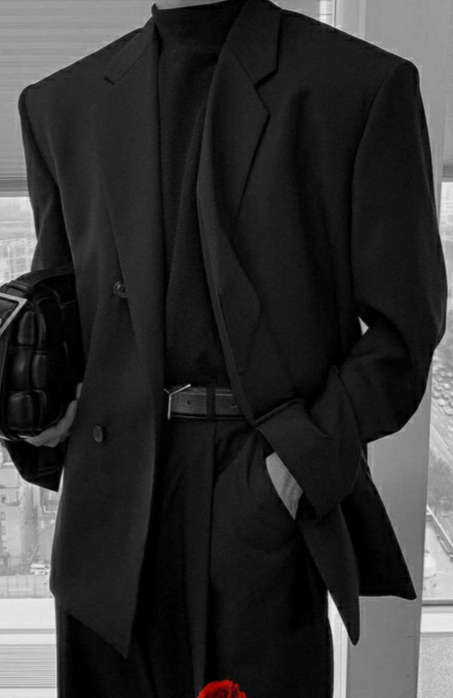

👔 Fabric: Shadow Silk (Incredibly soft, liquid drape ✨)
⚫ Color: Midnight Black
🧥 Style: Double-breasted
Lapels: Sharp peak lapels with hand-stitched darker silk thread 🧵
🧍 Shoulders: Structured
⏳ Waist: Subtly nipped
🔒 Closure: Two custom-made obsidian buttons with laser-etched abstract design 🔘🔘
Cuffs: Four working buttons with hand-stitched buttonholes
Lining: Moonshadow Cupro (fictional - breathable, luxurious charcoal grey)
Pockets: Thoughtfully placed interior pockets, including a hidden static-resistant compartment
⭐ Detail: Delicate hand-embroidered monogram inside breast pocket
👖 Trousers: Modern straight-leg, flat front
🧵 Waistband: Hook-and-bar closure, interior brace buttons
➡️ Side Seam Detail: Almost imperceptible tonal stripe woven into the fabric
Pockets (Trousers): Deep and functional
🧵 Hems: Clean blind stitch